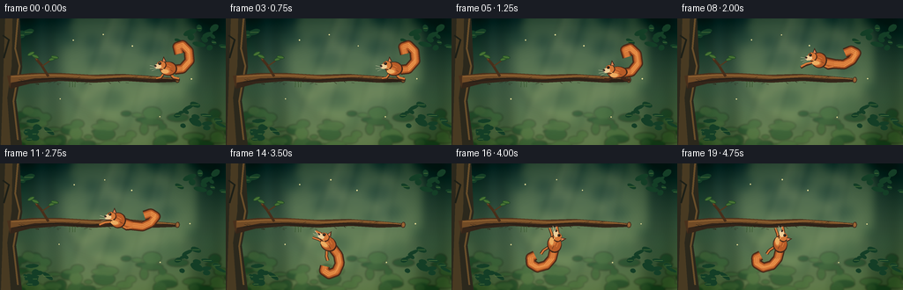
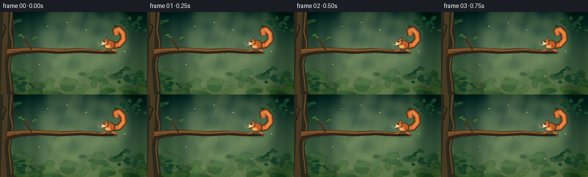
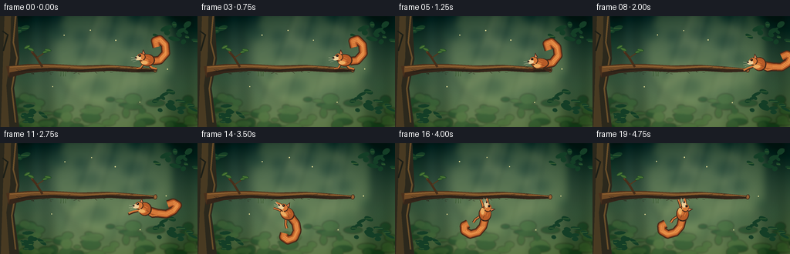
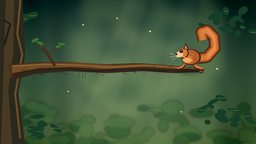
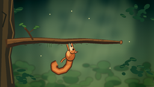

CODING AGENTS AS PIXEL WORLD MODELS
traex/GPT-5.6-Sol · dynamic_spatial_relationship_0022
点击播放 · 原生 RGB 像素
逐轮保存的候选
回放视频、检查图与代码变化。
每份候选均可单独播放。实际图片检查记录在下方工具轨迹中。
候选 01播放与检查图
点击播放 · 原生 RGB 像素


展开代码变化
--- 上一保存版本
+++ 本次保存版本
@@ -0,0 +1,288 @@
+from pathlib import Path
+import math
+import numpy as np
+from PIL import Image, ImageDraw, ImageFilter
+import artifact_io
+
+W, H, N, SS = 256, 144, 20, 4
+rng = np.random.default_rng(2202)
+
+# ---------- supersampled drawing helpers ----------
+def sc(v): return int(round(v * SS))
+def pts(poly): return [(sc(x), sc(y)) for x, y in poly]
+def ellipse(draw, box, fill, outline=None, width=1):
+ draw.ellipse(tuple(sc(v) for v in box), fill=fill, outline=outline, width=sc(width) if outline else 1)
+def line(draw, xy, fill, width=1, joint='curve'):
+ draw.line(pts(xy), fill=fill, width=sc(width), joint=joint)
+def polygon(draw, xy, fill): draw.polygon(pts(xy), fill=fill)
+
+def rotated_ellipse(draw, center, rx, ry, angle, fill, outline=None, ow=1):
+ ca, sa = math.cos(angle), math.sin(angle)
+ poly=[]
+ for i in range(32):
+ t=2*math.pi*i/32
+ u,v=rx*math.cos(t),ry*math.sin(t)
+ poly.append((center[0]+u*ca-v*sa, center[1]+u*sa+v*ca))
+ polygon(draw, poly, fill)
+ if outline: line(draw, poly+[poly[0]], outline, ow)
+
+def bezier(p0,p1,p2,p3,n=24):
+ out=[]
+ for t in np.linspace(0,1,n):
+ q=1-t
+ out.append((q**3*p0[0]+3*q*q*t*p1[0]+3*q*t*t*p2[0]+t**3*p3[0],
+ q**3*p0[1]+3*q*q*t*p1[1]+3*q*t*t*p2[1]+t**3*p3[1]))
+ return out
+
+# ---------- static painted forest ----------
+def make_background():
+ im=Image.new('RGB',(W*SS,H*SS))
+ a=np.array(im)
+ top=np.array([29,61,59]); bottom=np.array([111,139,91])
+ for y in range(H*SS):
+ t=y/(H*SS-1)
+ # brighter clearing behind the action
+ c=top*(1-t)+bottom*t
+ a[y,:,:]=np.clip(c,0,255)
+ im=Image.fromarray(a.astype(np.uint8))
+
+ # blurred depth layers
+ far=Image.new('RGBA',im.size,(0,0,0,0)); d=ImageDraw.Draw(far,'RGBA')
+ # light opening and sun haze
+ d.ellipse((sc(68),sc(-38),sc(226),sc(124)), fill=(190,207,123,55))
+ for _ in range(36):
+ x=float(rng.uniform(-10,266)); y=float(rng.uniform(-8,142)); r=float(rng.uniform(5,18))
+ col=(19,66,47,int(rng.integers(35,85))) if x<62 or x>215 else (57,102,61,int(rng.integers(18,50)))
+ d.ellipse((sc(x-r),sc(y-r*.6),sc(x+r),sc(y+r*.6)),fill=col)
+ # vertical trunks in depth
+ for x in [33,59,225,241]:
+ d.polygon(pts([(x-3,-5),(x+4,-5),(x+9,145),(x-5,145)]),fill=(25,54,39,90))
+ far=far.filter(ImageFilter.GaussianBlur(sc(5.5)))
+ im=Image.alpha_composite(im.convert('RGBA'),far)
+
+ # atmospheric sun rays
+ rays=Image.new('RGBA',im.size,(0,0,0,0)); rd=ImageDraw.Draw(rays,'RGBA')
+ rd.polygon(pts([(126,-5),(151,-5),(105,145),(70,145)]),fill=(235,226,156,18))
+ rd.polygon(pts([(181,-5),(198,-5),(170,145),(141,145)]),fill=(236,229,164,13))
+ im=Image.alpha_composite(im,rays.filter(ImageFilter.GaussianBlur(sc(3))))
+
+ # midground shrubs
+ mid=Image.new('RGBA',im.size,(0,0,0,0)); md=ImageDraw.Draw(mid,'RGBA')
+ for _ in range(70):
+ x=float(rng.uniform(-10,266)); y=float(rng.uniform(104,150)); rx=float(rng.uniform(4,13)); ry=float(rng.uniform(2,7))
+ col=rng.choice([(27,75,43,130),(42,91,50,125),(61,109,58,115),(73,121,61,90)])
+ md.ellipse((sc(x-rx),sc(y-ry),sc(x+rx),sc(y+ry)),fill=tuple(col))
+ im=Image.alpha_composite(im,mid.filter(ImageFilter.GaussianBlur(sc(1.0))))
+
+ # subtle vignette
+ yy,xx=np.mgrid[0:H*SS,0:W*SS]
+ nx=(xx-W*SS/2)/(W*SS/2); ny=(yy-H*SS/2)/(H*SS/2)
+ vig=np.clip((nx*nx+ny*ny-.2)*28,0,38).astype(np.uint8)
+ arr=np.array(im.convert('RGB')).astype(np.int16)
+ arr=np.clip(arr-vig[...,None],0,255).astype(np.uint8)
+ return Image.fromarray(arr,'RGB').convert('RGBA')
+
+BG=make_background()
+
+# bark speckles generated once for temporal coherence
+bark_marks=[]
+for _ in range(36):
+ x=float(rng.uniform(2,197));
+ # branch baseline slopes gently
+ y=73 - 0.026*x + float(rng.uniform(-4,4))
+ bark_marks.append((x,y,float(rng.uniform(1,4)),float(rng.uniform(-1.5,1.5))))
+
+leaves=[]
+for cluster in [(16,20),(235,23),(221,111),(36,128)]:
+ for _ in range(13):
+ leaves.append((cluster[0]+float(rng.normal(0,12)), cluster[1]+float(rng.normal(0,8)),
+ float(rng.uniform(3,8)), float(rng.uniform(1.5,4)), float(rng.uniform(-.8,.8))))
+
+def draw_scene_base(im, frame):
+ d=ImageDraw.Draw(im,'RGBA')
+ # distant drifting pollen, very subtle
+ for k,(x,y) in enumerate([(83,24),(149,31),(216,69),(68,92),(182,112),(118,18)]):
+ px=x+math.sin(frame*.17+k)*1.1; py=y+math.cos(frame*.13+k)*.6
+ ellipse(d,(px-0.7,py-0.7,px+0.7,py+0.7),(237,225,154,95))
+
+ # foreground leaf silhouettes framing scene
+ for k,(x,y,rx,ry,ang) in enumerate(leaves):
+ sway=math.sin(frame*.16+k*.7)*1.0
+ rotated_ellipse(d,(x+sway,y),rx,ry,ang,(20,62,38,190))
+ if k%3==0:
+ line(d,[(x-rx*.7+sway,y),(x+rx*.7+sway,y)],(92,125,62,80),.5)
+
+ # left tree trunk, strong visual origin of the branch
+ polygon(d,[(-5,-5),(22,-5),(25,56),(18,93),(25,145),(-7,145)],(43,40,28,255))
+ polygon(d,[(6,-5),(14,-5),(13,54),(8,90),(12,145),(1,145)],(72,58,34,255))
+ line(d,[(20,0),(17,34),(22,54),(15,94),(20,138)],(105,78,42,160),2)
+ line(d,[(3,19),(10,24),(4,45)],(28,31,23,170),2)
+
+ # Main branch silhouette: thick at trunk, tapered right tip. Upper and lower edges.
+ branch=[(8,65),(35,62),(70,62),(104,64),(139,63),(168,65),(201,68),
+ (202,71),(174,72),(142,70),(106,72),(69,70),(34,73),(11,79)]
+ polygon(d,branch,(72,48,28,255))
+ # warm upper plane and underside shadow
+ polygon(d,[(12,65),(42,63),(78,63),(111,65),(145,64),(174,66),(200,68),
+ (178,69),(143,67),(106,69),(68,67),(34,69),(12,73)],(113,75,38,255))
+ polygon(d,[(13,73),(39,68),(70,67),(104,69),(142,67),(177,69),(202,69),
+ (202,72),(174,73),(142,71),(106,73),(68,71),(34,74),(11,80)],(52,37,25,230))
+ line(d,[(13,66),(48,64),(80,65),(111,67),(145,65),(177,67),(199,69)],(159,108,54,180),1.1)
+ line(d,[(20,72),(60,68),(96,71),(130,68),(167,71)],(34,30,23,180),1)
+ # cut tip, very clear endpoint
+ rotated_ellipse(d,(201.2,69.8),2.2,3.1,.18,(142,92,48,255),(58,40,27,255),.7)
+ line(d,[(200.5,68.3),(201.7,71.2)],(187,126,65,150),.5)
+
+ # upward twig, visually reinforces branch identity
+ line(d,[(55,66),(47,53),(41,46)],(71,47,27,255),3.0)
+ line(d,[(48,54),(58,47)],(84,56,30,255),1.5)
+ line(d,[(42,47),(37,41)],(106,69,35,255),1.2)
+ for cx,cy,ang in [(35,40,-.5),(40,43,.4),(59,46,-.35),(62,44,.2)]:
+ rotated_ellipse(d,(cx,cy),4.2,1.9,ang,(55,103,46,245),(30,66,36,180),.4)
+ line(d,[(cx-2.8*math.cos(ang),cy-2.8*math.sin(ang)),(cx+2.8*math.cos(ang),cy+2.8*math.sin(ang))],(138,151,72,120),.4)
+
+ # bark marks
+ for i,(x,y,ln,dy) in enumerate(bark_marks):
+ if x < 18: continue
+ line(d,[(x,y),(x+ln,y+dy)],(40,31,22,130 if i%2 else 180),.55)
+
+ # a small hanging moss tuft beneath branch, far from landing point
+ for x in [79,82,85]:
+ line(d,[(x,71),(x+math.sin(x),77+(x%3))],(48,81,39,140),.55)
+
+
+def transform(local, x,y,ang):
+ ca,sa=math.cos(ang),math.sin(ang)
+ return (x+local[0]*ca-local[1]*sa, y+local[0]*sa+local[1]*ca)
+
+def draw_squirrel(im, x, y, angle=0.0, pose='perch', phase=0.0):
+ d=ImageDraw.Draw(im,'RGBA')
+ # squirrel faces left in local coordinates. Torso center is the anchor.
+ T=lambda p: transform(p,x,y,angle)
+ outline=(67,39,24,255); dark=(99,49,24,255); fur=(183,91,39,255)
+ fur2=(213,121,57,255); light=(237,174,98,255); cream=(238,205,151,255)
+
+ # tail path first; shape varies with action, with inertial lag
+ if pose in ('perch','crouch'):
+ tail=[T((8,1)),T((17,0)),T((25,-9)),T((24,-20)),T((17,-27)),T((11,-25)),T((13,-17))]
+ elif pose == 'flight':
+ wave=math.sin(phase*math.pi)*2
+ tail=[T((8,2)),T((18,4)),T((29,3+wave)),T((38,-2+wave)),T((43,-8)),T((37,-11)),T((30,-8))]
+ else: # hanging: tail drops and curls gently right
+ tail=[T((8,1)),T((17,4)),T((24,11)),T((26,21)),T((21,28)),T((14,28)),T((12,23))]
+ # layered tapered bushy tail
+ line(d,tail,outline,11.5)
+ line(d,tail,dark,9.8)
+ line(d,tail,fur,7.9)
+ line(d,tail,fur2,5.1)
+ # tail texture strokes
+ for off in [-2.2,0,2.2]:
+ shifted=[(px+off*math.cos(angle+math.pi/2),py+off*math.sin(angle+math.pi/2)) for px,py in tail[1:-1]]
+ if len(shifted)>1: line(d,shifted,(236,150,76,115 if off else 150),.65)
+
+ # legs and paws behind body
+ if pose == 'perch':
+ # hind foot firmly on right tip of branch, front paw forward
+ line(d,[T((3,6)),T((7,11)),T((13,12))],outline,3.4)
+ line(d,[T((3,6)),T((7,10)),T((13,11.2))],fur2,2.2)
+ line(d,[T((-5,6)),T((-8,11)),T((-13,11))],outline,3.0)
+ line(d,[T((-5,6)),T((-8,10)),T((-13,10.8))],fur2,1.8)
+ elif pose == 'crouch':
+ line(d,[T((4,5)),T((10,9)),T((15,9))],outline,3.5)
+ line(d,[T((-4,5)),T((-10,8)),T((-14,7))],outline,3.0)
+ elif pose == 'flight':
+ # extended forelegs toward destination and kicked-back hind legs
+ line(d,[T((-5,2)),T((-14,5)),T((-20,8))],outline,3.2)
+ line(d,[T((-5,2)),T((-14,4)),T((-20,7))],fur2,1.9)
+ line(d,[T((4,5)),T((11,9)),T((17,8))],outline,3.4)
+ line(d,[T((4,5)),T((11,8)),T((17,7))],fur2,2.0)
+ else:
+ # Forepaws stretch upward to grip underside. In local hanging orientation, these are frontward.
+ line(d,[T((-5,-2)),T((-13,-5)),T((-19,-4))],outline,3.3)
+ line(d,[T((-5,-2)),T((-13,-5)),T((-19,-4))],fur2,1.9)
+ line(d,[T((-2,2)),T((-11,2)),T((-18,4))],outline,3.0)
+ line(d,[T((-2,2)),T((-11,2)),T((-18,4))],fur2,1.7)
+ # back legs dangling
+ line(d,[T((3,6)),T((7,13)),T((11,16))],outline,3.4)
+ line(d,[T((3,6)),T((7,13)),T((11,16))],fur2,2.0)
+
+ # torso and belly
+ squash = 1.2 if pose=='crouch' else (0.90 if pose=='flight' else 1.0)
+ rotated_ellipse(d,T((1,0)),9.7*squash,8.1/squash,angle,outline)
+ rotated_ellipse(d,T((.5,-.2)),8.6*squash,7.2/squash,angle,fur)
+ rotated_ellipse(d,T((-2,2.2)),5.2,3.8,angle,fur2)
+ # cream belly highlight
+ rotated_ellipse(d,T((-3,3.0)),4.4,2.2,angle,light)
+
+ # neck, head, muzzle
+ rotated_ellipse(d,T((-7,-4)),5.5,5.1,angle,outline)
+ rotated_ellipse(d,T((-7.4,-4.3)),4.8,4.5,angle,fur2)
+ # pointed ear on top and inner ear
+ ear=[T((-6.5,-8)),T((-4.5,-14)),T((-1.5,-8.2))]
+ polygon(d,ear,outline)
+ polygon(d,[T((-5.6,-8.5)),T((-4.5,-12.1)),T((-2.6,-8.2))],(219,130,84,255))
+ # muzzle points left
+ rotated_ellipse(d,T((-11.1,-2.7)),4.0,2.7,angle,cream)
+ ellipse(d,(T((-14.1,-3.0))[0]-1.25,T((-14.1,-3.0))[1]-1.15,T((-14.1,-3.0))[0]+1.25,T((-14.1,-3.0))[1]+1.15),(47,31,25,255))
+ # eye with glint
+ ec=T((-9.0,-6.1)); ellipse(d,(ec[0]-1.65,ec[1]-1.65,ec[0]+1.65,ec[1]+1.65),outline)
+ ellipse(d,(ec[0]-.95,ec[1]-.95,ec[0]+.95,ec[1]+.95),(14,14,12,255))
+ ellipse(d,(ec[0]-.45,ec[1]-.65,ec[0]+.15,ec[1]-.05),(255,244,209,255))
+ # cheek stroke / fur edge
+ line(d,[T((-7,-1)),T((-4,1))],(246,181,104,170),.65)
+
+ # whiskers
+ line(d,[T((-13,-2)),T((-20,-3.5))],(238,223,189,180),.42)
+ line(d,[T((-13,-1)),T((-20,0))],(238,223,189,150),.38)
+ line(d,[T((-12,-.2)),T((-18,2.4))],(238,223,189,120),.35)
+
+ # a few directional fur strokes
+ line(d,[T((0,-4)),T((4,-2))],(241,151,75,120),.55)
+ line(d,[T((2,1)),T((6,3))],(91,47,26,110),.45)
+
+
+def frame_motion(i):
+ # establish the initial relation for a full second
+ if i <= 3:
+ return 190.0, 57.1 + .35*math.sin(i*.9), 0.0, 'perch', 0.0
+ if i <= 5:
+ q=(i-3)/2
+ return 189.0-2*q, 58.0+3.3*q, -0.05, 'crouch', q
+ # airborne frames 6..13: a clear leftward/downward arc from the right side
+ if i <= 13:
+ q=(i-5)/8
+ x=187 + (115-187)*q
+ # leap first rises, then drops beneath branch
+ y=59 + (90-59)*q - 25*math.sin(math.pi*q)
+ angle=-0.10 + 0.25*q
+ return x,y,angle,'flight',q
+ # catch and settle on the bottom/underside of branch; rotate head downward
+ q=min(1,(i-13)/3)
+ x=115+(116.5-115)*q
+ y=90+(91.0-90)*q + (1-q)*1.2*math.sin(q*math.pi)
+ angle=(0.15*(1-q) + 1.50*q) # body rotates to hang, head below
+ return x,y,angle,'hang',q
+
+frames=[]
+for i in range(N):
+ im=BG.copy()
+ draw_scene_base(im,i)
+ x,y,a,pose,q=frame_motion(i)
+ # soft contact/action shadow, helps depth and position relative to branch
+ if i<6:
+ sh=Image.new('RGBA',im.size,(0,0,0,0)); sd=ImageDraw.Draw(sh,'RGBA')
+ ellipse(sd,(177,68,203,74),(18,17,13,75)); sh=sh.filter(ImageFilter.GaussianBlur(sc(1.5)))
+ im=Image.alpha_composite(im,sh)
+ draw_squirrel(im,x,y,a,pose,q)
+ # Foreground catch paws/claws visibly overlap branch underside in final frames
+ if i>=14:
+ d=ImageDraw.Draw(im,'RGBA')
+ # tiny curved claws at the lower edge around x110-119
+ line(d,[(111,72),(111,69),(113,68.5)],(48,31,22,255),.65)
+ line(d,[(118,72),(118,69.5),(120,69)],(48,31,22,255),.65)
+ out=im.convert('RGB').resize((W,H),Image.Resampling.LANCZOS)
+ frames.append(np.asarray(out,dtype=np.uint8))
+
+frames=np.stack(frames)
+artifact_io.save(frames,Path(__file__).resolve().parent)
+print('saved',frames.shape,frames.dtype)
候选 02播放与检查图
点击播放 · 原生 RGB 像素

展开代码变化
--- 上一保存版本
+++ 本次保存版本
@@ -248,13 +248,15 @@
if i <= 5:
q=(i-3)/2
return 189.0-2*q, 58.0+3.3*q, -0.05, 'crouch', q
- # airborne frames 6..13: a clear leftward/downward arc from the right side
+ # Airborne frames 6..13: leap around the *tip* of the branch, then sweep
+ # underneath it. The curved route avoids visually passing through wood.
if i <= 13:
q=(i-5)/8
- x=187 + (115-187)*q
- # leap first rises, then drops beneath branch
- y=59 + (90-59)*q - 25*math.sin(math.pi*q)
- angle=-0.10 + 0.25*q
+ u=1-q
+ # Cubic Bezier: takeoff, high point beyond the right tip, under-arc, catch.
+ x=u**3*187 + 3*u*u*q*225 + 3*u*q*q*246 + q**3*115
+ y=u**3*59 + 3*u*u*q*40 + 3*u*q*q*97 + q**3*90
+ angle=-0.16 + 0.31*q
return x,y,angle,'flight',q
# catch and settle on the bottom/underside of branch; rotate head downward
q=min(1,(i-13)/3)
可观测工具轨迹
实际执行的命令与返回图片。
命令 1exit 0
/bin/bash -lc "ls -la && printf '\\n--- prompt.txt ---\\n' && cat prompt.txt && printf '\\n--- GENERATION_RULES.md ---\\n' && cat GENERATION_RULES.md && printf '\\n--- task_spec.json ---\\n' && cat task_spec.json"
命令 2exit 0
/bin/bash -lc "sed -n '1,260p' artifact_io.py && sed -n '1,220p' player_template.html"
命令 3exit 0
/bin/bash -lc "cat > generate.py <<'PY'
from pathlib import Path
import math
import numpy as np
from PIL import Image, ImageDraw, ImageFilter
import artifact_io
W, H, N, SS = 256, 144, 20, 4
rng = np.random.default_rng(2202)
# ---------- supersampled drawing helpers ----------
def sc(v): return int(round(v * SS))
def pts(poly): return [(sc(x), sc(y)) for x, y in poly]
def ellipse(draw, box, fill, outline=None, width=1):
draw.ellipse(tuple(sc(v) for v in box), fill=fill, outline=outline, width=sc(width) if outline else 1)
def line(draw, xy, fill, width=1, joint='curve'):
draw.line(pts(xy), fill=fill, width=sc(width), joint=joint)
def polygon(draw, xy, fill): draw.polygon(pts(xy), fill=fill)
def rotated_ellipse(draw, center, rx, ry, angle, fill, outline=None, ow=1):
ca, sa = math.cos(angle), math.sin(angle)
poly=[]
for i in range(32):
t=2*math.pi*i/32
u,v=rx*math.cos(t),ry*math.sin(t)
poly.append((center[0]+u*ca-v*sa, center[1]+u*sa+v*ca))
polygon(draw, poly, fill)
if outline: line(draw, poly+[poly[0]], outline, ow)
def bezier(p0,p1,p2,p3,n=24):
out=[]
for t in np.linspace(0,1,n):
q=1-t
out.append((q**3*p0[0]+3*q*q*t*p1[0]+3*q*t*t*p2[0]+t**3*p3[0],
q**3*p0[1]+3*q*q*t*p1[1]+3*q*t*t*p2[1]+t**3*p3[1]))
return out
# ---------- static painted forest ----------
def make_background():
im=Image.new('RGB',(W*SS,H*SS))
a=np.array(im)
top=np.array([29,61,59]); bottom=np.array([111,139,91])
for y in range(H*SS):
t=y/(H*SS-1)
# brighter clearing behind the action
c=top*(1-t)+bottom*t
a[y,:,:]=np.clip(c,0,255)
im=Image.fromarray(a.astype(np.uint8))
# blurred depth layers
far=Image.new('RGBA',im.size,(0,0,0,0)); d=ImageDraw.Draw(far,'RGBA')
# light opening and sun haze
d.ellipse((sc(68),sc(-38),sc(226),sc(124)), fill=(190,207,123,55))
for _ in range(36):
x=float(rng.uniform(-10,266)); y=float(rng.uniform(-8,142)); r=float(rng.uniform(5,18))
col=(19,66,47,int(rng.integers(35,85))) if x<62 or x>215 else (57,102,61,int(rng.integers(18,50)))
d.ellipse((sc(x-r),sc(y-r*.6),sc(x+r),sc(y+r*.6)),fill=col)
# vertical trunks in depth
for x in [33,59,225,241]:
d.polygon(pts([(x-3,-5),(x+4,-5),(x+9,145),(x-5,145)]),fill=(25,54,39,90))
far=far.filter(ImageFilter.GaussianBlur(sc(5.5)))
im=Image.alpha_composite(im.convert('RGBA'),far)
# atmospheric sun rays
rays=Image.new('RGBA',im.size,(0,0,0,0)); rd=ImageDraw.Draw(rays,'RGBA')
rd.polygon(pts([(126,-5),(151,-5),(105,145),(70,145)]),fill=(235,226,156,18))
rd.polygon(pts([(181,-5),(198,-5),(170,145),(141,145)]),fill=(236,229,164,13))
im=Image.alpha_composite(im,rays.filter(ImageFilter.GaussianBlur(sc(3))))
# midground shrubs
mid=Image.new('RGBA',im.size,(0,0,0,0)); md=ImageDraw.Draw(mid,'RGBA')
for _ in range(70):
x=float(rng.uniform(-10,266)); y=float(rng.uniform(104,150)); rx=float(rng.uniform(4,13)); ry=float(rng.uniform(2,7))
col=rng.choice([(27,75,43,130),(42,91,50,125),(61,109,58,115),(73,121,61,90)])
md.ellipse((sc(x-rx),sc(y-ry),sc(x+rx),sc(y+ry)),fill=tuple(col))
im=Image.alpha_composite(im,mid.filter(ImageFilter.GaussianBlur(sc(1.0))))
# subtle vignette
yy,xx=np.mgrid[0:H*SS,0:W*SS]
nx=(xx-W*SS/2)/(W*SS/2); ny=(yy-H*SS/2)/(H*SS/2)
vig=np.clip((nx*nx+ny*ny-.2)*28,0,38).astype(np.uint8)
arr=np.array(im.convert('RGB')).astype(np.int16)
arr=np.clip(arr-vig[...,None],0,255).astype(np.uint8)
return Image.fromarray(arr,'RGB').convert('RGBA')
BG=make_background()
# bark speckles generated once for temporal coherence
bark_marks=[]
for _ in range(36):
x=float(rng.uniform(2,197));
# branch baseline slopes gently
y=73 - 0.026*x + float(rng.uniform(-4,4))
bark_marks.append((x,y,float(rng.uniform(1,4)),float(rng.uniform(-1.5,1.5))))
leaves=[]
for cluster in [(16,20),(235,23),(221,111),(36,128)]:
for _ in range(13):
leaves.append((cluster[0]+float(rng.normal(0,12)), cluster[1]+float(rng.normal(0,8)),
float(rng.uniform(3,8)), float(rng.uniform(1.5,4)), float(rng.uniform(-.8,.8))))
def draw_scene_base(im, frame):
d=ImageDraw.Draw(im,'RGBA')
# distant drifting pollen, very subtle
for k,(x,y) in enumerate([(83,24),(149,31),(216,69),(68,92),(182,112),(118,18)]):
px=x+math.sin(frame*.17+k)*1.1; py=y+math.cos(frame*.13+k)*.6
ellipse(d,(px-0.7,py-0.7,px+0.7,py+0.7),(237,225,154,95))
# foreground leaf silhouettes framing scene
for k,(x,y,rx,ry,ang) in enumerate(leaves):
sway=math.sin(frame*.16+k*.7)*1.0
rotated_ellipse(d,(x+sway,y),rx,ry,ang,(20,62,38,190))
if k%3==0:
line(d,[(x-rx*.7+sway,y),(x+rx*.7+sway,y)],(92,125,62,80),.5)
# left tree trunk, strong visual origin of the branch
polygon(d,[(-5,-5),(22,-5),(25,56),(18,93),(25,145),(-7,145)],(43,40,28,255))
polygon(d,[(6,-5),(14,-5),(13,54),(8,90),(12,145),(1,145)],(72,58,34,255))
line(d,[(20,0),(17,34),(22,54),(15,94),(20,138)],(105,78,42,160),2)
line(d,[(3,19),(10,24),(4,45)],(28,31,23,170),2)
# Main branch silhouette: thick at trunk, tapered right tip. Upper and lower edges.
branch=[(8,65),(35,62),(70,62),(104,64),(139,63),(168,65),(201,68),
(202,71),(174,72),(142,70),(106,72),(69,70),(34,73),(11,79)]
polygon(d,branch,(72,48,28,255))
# warm upper plane and underside shadow
polygon(d,[(12,65),(42,63),(78,63),(111,65),(145,64),(174,66),(200,68),
(178,69),(143,67),(106,69),(68,67),(34,69),(12,73)],(113,75,38,255))
polygon(d,[(13,73),(39,68),(70,67),(104,69),(142,67),(177,69),(202,69),
(202,72),(174,73),(142,71),(106,73),(68,71),(34,74),(11,80)],(52,37,25,230))
line(d,[(13,66),(48,64),(80,65),(111,67),(145,65),(177,67),(199,69)],(159,108,54,180),1.1)
line(d,[(20,72),(60,68),(96,71),(130,68),(167,71)],(34,30,23,180),1)
# cut tip, very clear endpoint
rotated_ellipse(d,(201.2,69.8),2.2,3.1,.18,(142,92,48,255),(58,40,27,255),.7)
line(d,[(200.5,68.3),(201.7,71.2)],(187,126,65,150),.5)
# upward twig, visually reinforces branch identity
line(d,[(55,66),(47,53),(41,46)],(71,47,27,255),3.0)
line(d,[(48,54),(58,47)],(84,56,30,255),1.5)
line(d,[(42,47),(37,41)],(106,69,35,255),1.2)
for cx,cy,ang in [(35,40,-.5),(40,43,.4),(59,46,-.35),(62,44,.2)]:
rotated_ellipse(d,(cx,cy),4.2,1.9,ang,(55,103,46,245),(30,66,36,180),.4)
line(d,[(cx-2.8*math.cos(ang),cy-2.8*math.sin(ang)),(cx+2.8*math.cos(ang),cy+2.8*math.sin(ang))],(138,151,72,120),.4)
# bark marks
for i,(x,y,ln,dy) in enumerate(bark_marks):
if x < 18: continue
line(d,[(x,y),(x+ln,y+dy)],(40,31,22,130 if i%2 else 180),.55)
# a small hanging moss tuft beneath branch, far from landing point
for x in [79,82,85]:
line(d,[(x,71),(x+math.sin(x),77+(x%3))],(48,81,39,140),.55)
def transform(local, x,y,ang):
ca,sa=math.cos(ang),math.sin(ang)
return (x+local[0]*ca-local[1]*sa, y+local[0]*sa+local[1]*ca)
def draw_squirrel(im, x, y, angle=0.0, pose='perch', phase=0.0):
d=ImageDraw.Draw(im,'RGBA')
# squirrel faces left in local coordinates. Torso center is the anchor.
T=lambda p: transform(p,x,y,angle)
outline=(67,39,24,255); dark=(99,49,24,255); fur=(183,91,39,255)
fur2=(213,121,57,255); light=(237,174,98,255); cream=(238,205,151,255)
# tail path first; shape varies with action, with inertial lag
if pose in ('perch','crouch'):
tail=[T((8,1)),T((17,0)),T((25,-9)),T((24,-20)),T((17,-27)),T((11,-25)),T((13,-17))]
elif pose == 'flight':
wave=math.sin(phase*math.pi)*2
tail=[T((8,2)),T((18,4)),T((29,3+wave)),T((38,-2+wave)),T((43,-8)),T((37,-11)),T((30,-8))]
else: # hanging: tail drops and curls gently right
tail=[T((8,1)),T((17,4)),T((24,11)),T((26,21)),T((21,28)),T((14,28)),T((12,23))]
# layered tapered bushy tail
line(d,tail,outline,11.5)
line(d,tail,dark,9.8)
line(d,tail,fur,7.9)
line(d,tail,fur2,5.1)
# tail texture strokes
for off in [-2.2,0,2.2]:
shifted=[(px+off*math.cos(angle+math.pi/2),py+off*math.sin(angle+math.pi/2)) for px,py in tail[1:-1]]
if len(shifted)>1: line(d,shifted,(236,150,76,115 if off else 150),.65)
# legs and paws behind body
if pose == 'perch':
# hind foot firmly on right tip of branch, front paw forward
line(d,[T((3,6)),T((7,11)),T((13,12))],outline,3.4)
line(d,[T((3,6)),T((7,10)),T((13,11.2))],fur2,2.2)
line(d,[T((-5,6)),T((-8,11)),T((-13,11))],outline,3.0)
line(d,[T((-5,6)),T((-8,10)),T((-13,10.8))],fur2,1.8)
elif pose == 'crouch':
line(d,[T((4,5)),T((10,9)),T((15,9))],outline,3.5)
line(d,[T((-4,5)),T((-10,8)),T((-14,7))],outline,3.0)
elif pose == 'flight':
# extended forelegs toward destination and kicked-back hind legs
line(d,[T((-5,2)),T((-14,5)),T((-20,8))],outline,3.2)
line(d,[T((-5,2)),T((-14,4)),T((-20,7))],fur2,1.9)
line(d,[T((4,5)),T((11,9)),T((17,8))],outline,3.4)
line(d,[T((4,5)),T((11,8)),T((17,7))],fur2,2.0)
else:
# Forepaws stretch upward to grip underside. In local hanging orientation, these are frontward.
line(d,[T((-5,-2)),T((-13,-5)),T((-19,-4))],outline,3.3)
line(d,[T((-5,-2)),T((-13,-5)),T((-19,-4))],fur2,1.9)
line(d,[T((-2,2)),T((-11,2)),T((-18,4))],outline,3.0)
line(d,[T((-2,2)),T((-11,2)),T((-18,4))],fur2,1.7)
# back legs dangling
line(d,[T((3,6)),T((7,13)),T((11,16))],outline,3.4)
line(d,[T((3,6)),T((7,13)),T((11,16))],fur2,2.0)
# torso and belly
squash = 1.2 if pose=='crouch' else (0.90 if pose=='flight' else 1.0)
rotated_ellipse(d,T((1,0)),9.7*squash,8.1/squash,angle,outline)
rotated_ellipse(d,T((.5,-.2)),8.6*squash,7.2/squash,angle,fur)
rotated_ellipse(d,T((-2,2.2)),5.2,3.8,angle,fur2)
# cream belly highlight
rotated_ellipse(d,T((-3,3.0)),4.4,2.2,angle,light)
# neck, head, muzzle
rotated_ellipse(d,T((-7,-4)),5.5,5.1,angle,outline)
rotated_ellipse(d,T((-7.4,-4.3)),4.8,4.5,angle,fur2)
# pointed ear on top and inner ear
ear=[T((-6.5,-8)),T((-4.5,-14)),T((-1.5,-8.2))]
polygon(d,ear,outline)
polygon(d,[T((-5.6,-8.5)),T((-4.5,-12.1)),T((-2.6,-8.2))],(219,130,84,255))
# muzzle points left
rotated_ellipse(d,T((-11.1,-2.7)),4.0,2.7,angle,cream)
ellipse(d,(T((-14.1,-3.0))[0]-1.25,T((-14.1,-3.0))[1]-1.15,T((-14.1,-3.0))[0]+1.25,T((-14.1,-3.0))[1]+1.15),(47,31,25,255))
# eye with glint
ec=T((-9.0,-6.1)); ellipse(d,(ec[0]-1.65,ec[1]-1.65,ec[0]+1.65,ec[1]+1.65),outline)
ellipse(d,(ec[0]-.95,ec[1]-.95,ec[0]+.95,ec[1]+.95),(14,14,12,255))
ellipse(d,(ec[0]-.45,ec[1]-.65,ec[0]+.15,ec[1]-.05),(255,244,209,255))
# cheek stroke / fur edge
line(d,[T((-7,-1)),T((-4,1))],(246,181,104,170),.65)
# whiskers
line(d,[T((-13,-2)),T((-20,-3.5))],(238,223,189,180),.42)
line(d,[T((-13,-1)),T((-20,0))],(238,223,189,150),.38)
line(d,[T((-12,-.2)),T((-18,2.4))],(238,223,189,120),.35)
# a few directional fur strokes
line(d,[T((0,-4)),T((4,-2))],(241,151,75,120),.55)
line(d,[T((2,1)),T((6,3))],(91,47,26,110),.45)
def frame_motion(i):
# establish the initial relation for a full second
if i <= 3:
return 190.0, 57.1 + .35*math.sin(i*.9), 0.0, 'perch', 0.0
if i <= 5:
q=(i-3)/2
return 189.0-2*q, 58.0+3.3*q, -0.05, 'crouch', q
# airborne frames 6..13: a clear leftward/downward arc from the right side
if i <= 13:
q=(i-5)/8
x=187 + (115-187)*q
# leap first rises, then drops beneath branch
y=59 + (90-59)*q - 25*math.sin(math.pi*q)
angle=-0.10 + 0.25*q
return x,y,angle,'flight',q
# catch and settle on the bottom/underside of branch; rotate head downward
q=min(1,(i-13)/3)
x=115+(116.5-115)*q
y=90+(91.0-90)*q + (1-q)*1.2*math.sin(q*math.pi)
angle=(0.15*(1-q) + 1.50*q) # body rotates to hang, head below
return x,y,angle,'hang',q
frames=[]
for i in range(N):
im=BG.copy()
draw_scene_base(im,i)
x,y,a,pose,q=frame_motion(i)
# soft contact/action shadow, helps depth and position relative to branch
if i<6:
sh=Image.new('RGBA',im.size,(0,0,0,0)); sd=ImageDraw.Draw(sh,'RGBA')
ellipse(sd,(177,68,203,74),(18,17,13,75)); sh=sh.filter(ImageFilter.GaussianBlur(sc(1.5)))
im=Image.alpha_composite(im,sh)
draw_squirrel(im,x,y,a,pose,q)
# Foreground catch paws/claws visibly overlap branch underside in final frames
if i>=14:
d=ImageDraw.Draw(im,'RGBA')
# tiny curved claws at the lower edge around x110-119
line(d,[(111,72),(111,69),(113,68.5)],(48,31,22,255),.65)
line(d,[(118,72),(118,69.5),(120,69)],(48,31,22,255),.65)
out=im.convert('RGB').resize((W,H),Image.Resampling.LANCZOS)
frames.append(np.asarray(out,dtype=np.uint8))
frames=np.stack(frames)
artifact_io.save(frames,Path(__file__).resolve().parent)
print('saved',frames.shape,frames.dtype)
PY
python generate.py"命令 4exit 0
/bin/bash -lc 'python generate.py'
视觉工具实际返回图片 1

视觉工具实际返回图片 2

视觉工具实际返回图片 3

视觉工具实际返回图片 4

保存候选 2 份；完成命令 4 次；可验证图片返回 4 张。原始 API 响应与完整日志保留在本地。